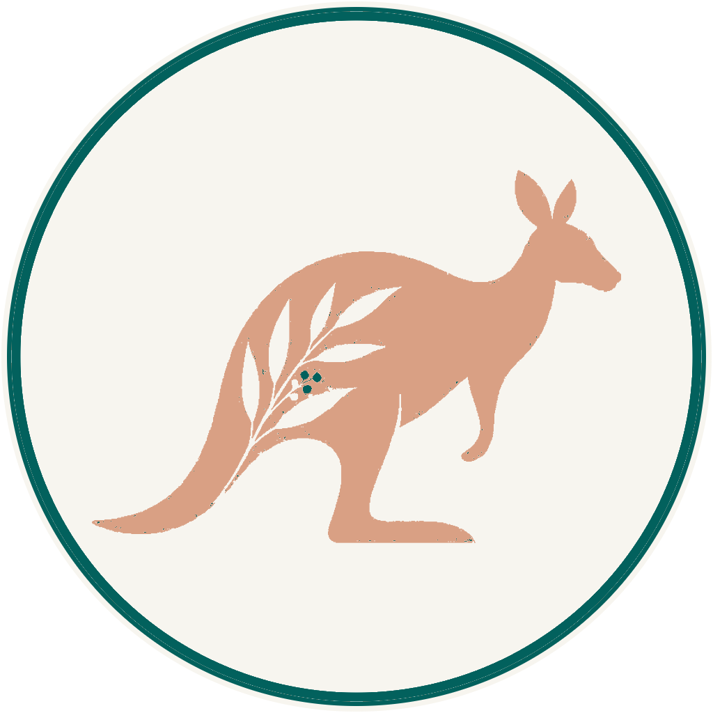

Australia or
New Zealand?
Two countries, one comparison
A side-by-side look at two of the best places in the world to build a healthcare career, and a life. Health systems, registration, visas, pay, lifestyle and how to decide. No pressure, no spin.
 Kettle on. A longer read — about 12 min
Kettle on. A longer read — about 12 min
The two countries at a glance
Before the detail, here’s the honest headline on each. The thing people tend to remember once the research is done.

AustraliaBigger, faster, more of everything
A large, wealthy country with major public health systems in every state and territory and one of the biggest private healthcare markets in the world. More roles, more settings, more specialisation, and warm weather across much of the year.
If scale, career breadth and earning potential sit near the top of your list, Australia tends to answer well.
Smaller, calmer, closer-knit
A smaller country running one national public health service, Health New Zealand – Te Whatu Ora, alongside a private sector. An acute, well-documented shortage of clinicians means demand is high and the welcome is genuine.
If balance, autonomy and a strong sense of community matter most, New Zealand is hard to beat.
It often comes down to scale versus balance. Australia gives you more of everything, roles, private options, sunshine and, frequently, pay. New Zealand gives you a gentler pace, autonomy and a country that feels knowable. Neither is "better". They’re different lives, and plenty of clinicians would be happy in either.
How the health systems work
Both countries run universal public healthcare funded largely through taxation, with a private sector alongside. How that’s organised is where they differ.
| Topic | Australia | New Zealand |
|---|---|---|
| Public system | Run at state and territory level, each jurisdiction manages its own public hospitals and services, within a national framework and Medicare. | One national service, Health New Zealand – Te Whatu Ora, delivering public hospital and community care across the country. |
| Private sector | Very large and well established, especially in imaging, surgery and diagnostics, a major source of roles. | Present and growing, but smaller; most acute care sits within the public service. |
| Scale | Large population spread across big cities and vast regional areas. | Smaller population concentrated in a handful of cities, plus high-demand regional centres. |
| What it means for you | More employers and settings to choose between; you’ll often weigh public against private. | A more unified system; simpler to navigate, with strong demand almost everywhere. |
In Australia, part of your decision is often public or private, two quite different working cultures. In New Zealand, the bigger question is usually which part of the country, because the system itself is more consistent from place to place.
Getting registered to practise
You can’t work as a clinician in either country until the relevant regulator has registered you. The principle is the same; the machinery differs.
One national scheme
Australia regulates health professions through a single national scheme administered by Ahpra (the Australian Health Practitioner Regulation Agency), with a national board for each profession. Registration applies Australia-wide, so it travels with you between states. Many roles carry a protected title.
- For several professions, qualifications from comparable overseas regulators (for example the UK’s HCPC or Ireland’s CORU) can be recognised through a faster pathway.
- Otherwise the relevant board assesses your qualification, and a national examination is sometimes required.
- Registration and a migration skills assessment are separate processes; you may need one, the other, or both.
Profession-specific boards
New Zealand regulates each profession through its own responsible authority or board, and once registered you hold an Annual Practising Certificate (APC) that you renew each year. For most internationally-trained clinicians the process is well-trodden.
- The board assesses your qualification, recent clinical experience and competence against New Zealand standards.
- Routes are often a comparable-country pathway (more streamlined) or a qualifications-assessed pathway.
- You’ll typically need verified qualifications, evidence of recent practice, a criminal-history check and, where required, English-language evidence.
Australia’s single national register is elegant once you’re in, but the front door can involve more steps. New Zealand’s per-profession boards mean the path is usually more direct, with an annual certificate to keep current. Your exact route depends on your profession and where you trained, our profession pages walk through each one.
Pay & the cost of living
This is the section everyone wants a single number for, and the one where a single number would mislead you. Here’s how pay works in each country, and what to weigh alongside it.
Agreements, awards & super
Public-sector pay is set by state-based enterprise agreements and awards, which also define progression, overtime and allowances. On top of pay, employers pay compulsory superannuation (retirement contributions).
The very large private sector, with high volumes in some specialties, can support strong earning potential, but figures vary by state, setting and role.
Collective agreements & balance
Public pay is largely set by national collective agreements, which give clear, consistent bands and progression across the country. Private work can add to this for some roles.
Many clinicians tell us the draw isn’t only the number, it’s the manageable workload and the life around the job.
"What will I actually earn?" is a per-role question, so we answer it per role.
Cost of living matters just as much as headline pay. Both countries have affordable regional areas and pricier big cities; housing is the biggest variable in each. The right comparison is always take-home pay against local costs for the specific place you’d live, not one country’s average against another’s.
Visas & the right to work
Both countries actively want skilled healthcare workers and have clear routes for them. Including options that bring your partner and children with you, often with work and schooling rights.
| Topic | Australia | New Zealand |
|---|---|---|
| Common work route | Employer-sponsored temporary work visas are the usual entry for skilled clinicians, with skilled and nominated pathways alongside. | The Accredited Employer Work Visa is the usual route, tied to an accredited employer and a skilled role. |
| Residence | Employer-nomination and skilled-migration routes can lead to permanent residence for eligible clinicians. | Healthcare roles feature strongly on the skills lists, with work-to-residence and straight-to-residence options for many. |
| Your family | Partner work rights and schooling for children are typically available on the main skilled routes. | Partners can usually work and children can attend school, generally on domestic terms while you hold an eligible visa. |
| Good to know | Some visa routes also require a migration skills assessment, separate from professional registration. | Registration and visa steps are best sequenced together, usually a job offer first, then the visa. |
Both countries reward getting the order right: registration, offer and visa need to happen in the correct sequence, and small timing details (like the validity window on certificates) trip people up. We help you sequence it. We don’t give immigration advice ourselves, but we make sure nothing happens out of order.
Lifestyle, geography & family
For most families, this is where the decision is really made. Both countries are safe, English-speaking, outdoors-oriented and welcoming, but they feel different to live in.
Warm, big and buzzy
A warmer, sunnier climate across much of the country, large coastal cities with plenty going on, and enormous variety, from beaches to outback. Distances are big, which shapes travel and where you settle.
Great for those who want energy, choice and reliable sunshine.
Green, compact and calm
A cooler, greener landscape of mountains, coast and lakes, rarely far away. Cities are smaller and more relaxed, commutes are shorter, and the outdoors is on your doorstep.
Great for those who want space, nature and a slower, family-friendly rhythm.
Both countries offer strong, accessible schooling and universal healthcare for your family, safe communities, and a real culture of work-life balance. Māori culture is woven through everyday life in New Zealand; Australia’s draw is often its sheer scale and diversity of places to build a life.
Picture an ordinary Tuesday, not just the holiday photos, that’s the life you’re choosing.
Career & scope of practice
Where will your career grow faster, and how will the day-to-day feel? Scale and shortage pull in slightly different directions here.
| Topic | Australia | New Zealand |
|---|---|---|
| Market size | Large, major public systems plus one of the world’s biggest private sectors, so more roles and settings. | Smaller, but with an acute, sustained shortage that keeps demand high across the country. |
| Specialisation | Broad scope to sub-specialise, with clear career ladders in bigger centres. | Broad general scope with room to develop expertise; often more autonomy earlier. |
| Ways of working | Choice between public and private cultures; high volumes in some private settings. | Mostly public, with modern kit and manageable lists frequently cited by clinicians. |
| The feel | Busy, varied, career-forward. | Steady, sustainable, people-first. |
Australia’s scale gives you more directions to grow and more private options. New Zealand’s shortage gives you strong demand, autonomy and a workload people describe as sustainable. Both are good places to build a long career, the difference is tempo.
Which might suit you?
There’s no scorecard that decides this for you, but these leanings help many people see where their instincts already point. Read both columns; notice which one you nod along to.
- Career breadth and specialisation matter most
- You’d like the option of public or private work
- Earning potential is high on your list
- You want warm weather and big-city energy
- You’re comfortable in a larger, faster environment
- Work-life balance is your priority
- You value autonomy and a broad general scope
- You want a compact, nature-first way of living
- A close-knit community appeals to you and your family
- A simpler, more unified system sounds right
You don’t have to choose forever. Plenty of clinicians start in one country and move to the other later. The two systems have a lot in common, and experience in one is valued in the other. The goal right now is the next good step for you and your family.

People often come to us convinced they have to get this "right" the first time. You don’t. Both countries are wonderful, and both value your skills, so the honest question isn’t which is better, it’s which fits the life you want next. Tell me what matters most to you and your family, and I’ll tell you straight where I think you’d be happiest. Sometimes that’s Australia, sometimes New Zealand, and sometimes it’s starting where the door opens first.
SophieFounder, Ethicare Resourcing
The things people ask us first
Is it easier to get registered in Australia or New Zealand?
It depends entirely on your profession and where you trained. New Zealand’s per-profession boards are often more direct; Australia’s national scheme is elegant once you’re in but can involve more steps, and sometimes a national exam or a separate migration skills assessment. Our profession pages walk through each pathway, and we’ll map yours specifically.
Where will I earn more?
There’s no honest single answer. It varies by role, setting, state and agreement, and must be weighed against local living costs. We deliberately don’t print salary bands here because they date quickly. For any specific opportunity, we confirm the current, verified pay with you before you decide.
Can my family come with me?
Yes. On the main skilled routes in both countries, partners can usually work and children can attend school. The exact terms depend on your visa, and we help the candidates we place get each step in the right order.
Do I have to choose one forever?
No. Many clinicians move between the two over a career. Experience in one country is valued in the other, and the systems have a lot in common. The goal right now is the next good step.
I’m not from the UK, does this still apply to me?
Absolutely. We support clinicians trained across the UK, Ireland, South Africa, the UAE and beyond. Both countries recognise a wide range of international qualifications. The specifics are what we help you check.
Still weighing the two? Let’s talk it through
Whether you already know which country calls you, or you’re torn, a calm, no-pressure conversation is the best next step. Tell us your profession and what matters most, and we’ll map your options in each country.
Ethicare Resourcing, healthcare careers across Australia & New Zealand.